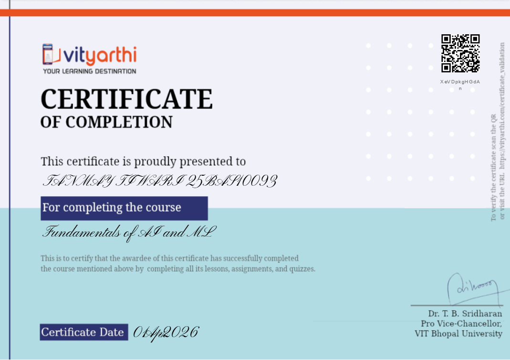
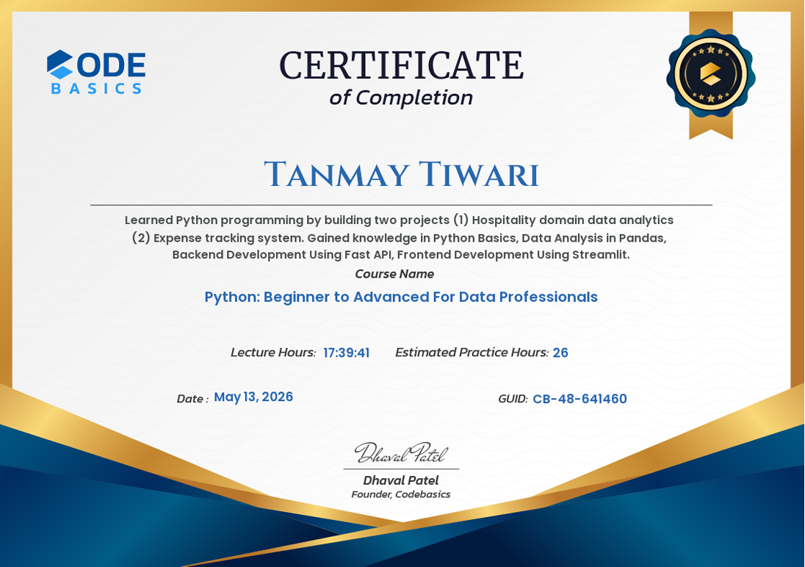

01
ML / AI
Student Productivity Classifier
GitHub ↗
Read Case Study →
A Random Forest classifier that predicts productivity tiers — Low, Medium, High — from four lifestyle features. My first complete end-to-end ML project.
This project is a supervised machine-learning classifier that takes four numerical lifestyle inputs — average sleep hours, study hours, screen time, and exercise frequency — and predicts the user's productivity tier: Low, Medium, or High. The underlying model is a Random Forest, an ensemble of decision trees that aggregates predictions across many weak learners to produce a robust final classification.
The pipeline runs the full ML lifecycle locally: data ingestion, train-test stratification, model fitting, evaluation, and prediction on unseen inputs. There is no web interface yet — the project lives as a Jupyter-style notebook plus supporting Python modules.
I wanted a project that would force me to walk through every stage of a real machine-learning workflow, not just the modeling step. Most introductory ML tutorials hand you clean data and a fit-predict-score loop. I wanted the messier reality: deciding what counts as a feature, choosing how to stratify the train-test split, picking an algorithm appropriate to the data size, and reading what the trained model actually tells you about the underlying domain.
The topic — student productivity — was deliberate. As an engineering student preparing for both academic exams and defense services, I am genuinely curious about which daily habits actually correlate with productive output. Building the model was a way to ask that question with code instead of intuition.
The implementation walks through several deliberate stages. First, I structured the input data with four features and one target label — three productivity classes encoded as integers. Next came exploratory analysis in Pandas: distribution checks, missing-value audits, and basic correlation inspection between each feature and the target.
For modeling, I chose Scikit-learn's RandomForestClassifier over a single decision tree because Random Forests handle small datasets with mixed feature scales gracefully, resist overfitting through bagging, and expose feature-importance scores that turn the model into an interpretability tool, not just a prediction engine. The data was split using stratified sampling so each productivity class was proportionally represented in both train and test sets — critical when class sizes are uneven.
Evaluation went beyond raw accuracy. I read the confusion matrix to see which classes the model confused with which, since misclassifying "High" as "Low" is a different kind of error from confusing two adjacent tiers. Finally, I extracted feature-importance rankings to surface which lifestyle inputs the trees were actually leaning on.
Three lessons shaped the rest of my ML work. Feature engineering matters more than algorithm choice at this scale — a thoughtful feature design and a clean train-test split beat algorithm hyperparameter tuning every time on small datasets. Interpretability is not optional — a classifier you cannot explain is a classifier you cannot trust, and Random Forest's feature-importance output is one of the cleanest interpretability handles in scikit-learn. Evaluation is multidimensional — accuracy is a single number; the confusion matrix and per-class precision/recall tell you what kinds of mistakes the model is actually making.
The specific use case — student productivity prediction — is modest. But the architecture generalizes to any problem where you want to predict a categorical outcome from a small set of numerical lifestyle, sensor, or operational inputs: fatigue prediction in pilots, fitness-readiness scoring for athletes, classification of engineering-system health states from sensor telemetry. The pattern of "ingest features → stratified split → Random Forest → interpret importance" is identical across all of these.
For me personally, the model became a baseline I will return to in aerospace contexts: any time I want to classify a discrete physical or behavioral state from a small feature set, Random Forest is now my default starting point.
A Python implementation of the International Standard Atmosphere from 0 to 86 km. Computes temperature, pressure, and density across every atmospheric layer, with Matplotlib visualizations validated against published reference tables.
The tool models the International Standard Atmosphere (ISA) — the reference atmosphere agreed upon by aviation, aerospace, and meteorological bodies as a baseline for engineering calculations. Given any altitude between sea level and 86 kilometers, the program returns three values: temperature, atmospheric pressure, and air density at that altitude.
The atmosphere is divided into seven layers, each with its own lapse rate (how temperature changes with altitude). The program detects which layer your input altitude falls in, applies the correct lapse-rate equation for that layer, and computes the corresponding thermodynamic state. It then plots the full vertical profile — temperature, pressure, and density vs. altitude — using Matplotlib.
I was studying aerospace fundamentals and kept hitting the same problem: every aerodynamics, propulsion, and flight-mechanics formula assumes you already know the atmospheric conditions at your flight altitude. The textbook ISA tables give you discrete values at fixed altitudes, but the real calculations want continuous values at any altitude in between. Looking up and interpolating tables by hand is slow and error-prone.
I wanted a tool that I owned, that I understood from first principles, and that I could trust because I had implemented every line of the underlying physics myself. Buying or installing a black-box atmospheric library would not have taught me anything. Writing one from scratch forced me to actually understand each layer transition, each governing equation, and why the ISA is constructed the way it is.
The structure follows the physics directly. I encoded the seven atmospheric layers as a data structure with each layer's base altitude, base temperature, base pressure, and lapse rate. The core function then takes an input altitude, identifies which layer contains it, and applies one of two governing equations depending on whether that layer's lapse rate is zero (isothermal) or non-zero.
For layers with a non-zero lapse rate, temperature is computed linearly, and pressure follows the standard barometric formula derived from hydrostatic equilibrium combined with the ideal gas law. For isothermal layers, pressure decays exponentially. Density falls out of pressure and temperature via the ideal gas equation.
I implemented the math in vectorized NumPy so the same code path computes single values or full altitude sweeps without modification. Visualization uses Matplotlib's standard plotting interface, with each thermodynamic quantity rendered on its own subplot for clarity.
Validation was the most important step. I compared my output against published ISA reference tables at standard altitudes — sea level, 11 km (tropopause), 20 km, 32 km, 47 km, 51 km, and 71 km — to confirm the model matched established values within rounding tolerance.
This was my first project where the code was almost entirely a transcription of physics into Python, and that taught me how engineering software is supposed to be written. Boundary conditions are everything — most of the bugs I hit were not algorithmic, they were off-by-one errors at layer transitions where two governing equations meet. Validation against authoritative sources is non-negotiable — without checking against published ISA tables, I would have shipped a model with subtle errors and not known. NumPy vectorization is a force multiplier — writing the math once in a vectorized form let the same code handle a single-altitude query or a thousand-point profile sweep with no logic change.
The ISA model is the foundation underneath nearly every aerospace calculation that involves air. It feeds into: aircraft performance modeling (lift, drag, and engine thrust all depend on local air density), missile and rocket trajectory simulation, UAV altitude planning, weather-balloon and high-altitude payload design, and the calibration of flight-test instrumentation. Any pilot, aerospace engineer, or atmospheric scientist works on top of this model whether they realize it or not.
For me, this project is the foundation layer of a longer arc. I plan to extend it into flight-envelope visualization, propulsion performance estimation at altitude, and eventually a small computational tool for aircraft mission profiling.
A mood-to-music recommendation engine. Maps emotional states onto audio feature dimensions like tempo, valence, and energy, then surfaces matching tracks through a Streamlit interface.
Vibe-Tunes is a small but complete recommendation system. The user selects an emotional state — for example, "calm," "energetic," or "focused" — and the application returns a curated list of music tracks that match that mood, drawing from a dataset annotated with audio-feature scores.
Under the hood, each emotional state is mapped to a target zone in a multi-dimensional feature space defined by audio attributes: tempo (BPM), valence (musical positivity), energy, danceability, and acousticness. The recommendation engine then filters the track dataset for entries whose feature vectors fall within that target zone.
This project came out of a basic frustration: existing music recommenders optimize for what you have listened to in the past, not what you actually want to feel right now. If I am about to sit down for a focused study session, my listening history from yesterday's gym workout is the wrong signal to recommend from. I wanted a system where the input is the state I want to be in, not the state I have been in.
From a learning standpoint, the project was also my entry into end-to-end application development — moving beyond standalone scripts into something with a real user interface, persistent state, and a deliverable web UI. It was my milestone project for the Codebasics Gen AI bootcamp.
The architecture has three layers. The data layer is a Pandas DataFrame of tracks, each row carrying its audio-feature vector and metadata. The logic layer contains the mood-to-feature mapping — a dictionary that defines, for example, that "calm" corresponds to low tempo, high acousticness, and moderate valence. The mapping was hand-tuned based on documented audio-feature conventions used by mainstream music recommendation services. The presentation layer is a Streamlit app that exposes mood selection through a dropdown and renders the filtered recommendations as cards.
For the filtering itself, I used Pandas boolean indexing with tolerance windows around each target feature value — not exact matches, since real audio features sit on a continuous scale. The system also handles edge cases: empty result sets fall back to a "closest match" mode using a weighted distance calculation across feature dimensions.
This project taught me three things I now consider non-negotiable for any user-facing system. Domain modeling comes first — the recommendation quality depended almost entirely on how thoughtfully the mood-to-feature mapping was constructed, not on the cleverness of the filter logic. UI is a design decision, not a leftover — Streamlit removed almost all the technical friction of building an interface, but the user-flow choices (single dropdown vs. sliders, card layout vs. list) materially changed how the recommendations felt. Edge cases define product quality — handling the empty-result case gracefully is what separates a demo from a usable tool.
The pattern Vibe-Tunes implements — map a high-level user intent onto a feature space, filter or rank items within that space, expose results through a clean interface — is the same pattern that underlies content recommendation across nearly every domain: music, video, e-commerce, news. The same architecture extends to non-entertainment contexts as well: matching pilots to suitable training simulators based on skill-feature vectors, recommending engineering case studies to students based on their topic-interest profile, surfacing maintenance procedures based on detected fault signatures.
A modular Python framework for tracking habits, computing streaks and completion rates, and visualizing behavioral trends. Built with strict separation between logging, analytics, and visualization layers.
The Habit Tracker is a Python framework that records daily check-ins for a configurable set of habits and then computes three categories of behavioral insight: current streak length, overall completion rate, and trend visualization over time. Streaks tell you about momentum. Completion rates tell you about consistency. Trend plots tell you about direction — whether your discipline is improving, flat, or decaying.
The tool runs locally as a Python module. There is no web interface; the focus was deliberately on the underlying computation and architecture rather than the surface UI.
I had two reasons, and they reinforced each other. The first was personal: as a defense aspirant maintaining a long-running discipline routine — physical training, study blocks, technical practice — I wanted a system that measured my consistency objectively, not by my own optimistic estimation.
The second reason was architectural. I had been writing single-file Python scripts for most of my prior projects, and I wanted to deliberately build something that separated concerns into independent modules. The habit-tracker problem is small enough to fit in one file but rich enough to benefit from real modular design — making it the right project to practice object-oriented structuring on.
The architecture is three modules, each with one job. The logging module handles the data layer — adding a habit, recording a check-in for a given date, and persisting state. The analytics module takes the logged data and computes derived metrics: current streak, longest streak, completion rate over a configurable window, and rolling averages. The visualization module consumes the analytics output and renders Matplotlib plots — a calendar-heatmap-style streak view and a line plot showing completion-rate trend.
The design rule I enforced was that each module only knew about the layer directly below it. Visualization never reads raw logs — it only consumes analytics. Analytics never writes — it only reads logs and computes. This means I can swap any layer's implementation independently. If I later want to move the logging layer from a local file to a database, the analytics and visualization code does not change at all.
The technical lesson was about architecture before features. The first version I wrote was a single 200-line script that did everything. When I refactored it into three modules, the total line count grew slightly, but the cognitive load of each module shrank dramatically. Adding the trend-plotting feature later took an hour because I only had to touch the visualization module. If I had stayed in the single-file structure, the same feature would have required understanding the entire codebase to add safely.
The personal lesson was harder. Once I had honest data on my own consistency, I could not lie to myself about it. The first three weeks of data showed that I was substantially less consistent than I had assumed. The tool worked exactly as intended — and the discomfort that produced was its actual value.
The architecture generalizes to any time-series behavioral analytics problem where you record discrete events over time and want to derive consistency, momentum, and trend metrics. Beyond personal habit tracking, the same pattern applies to: flight-hour logging and currency tracking for pilots, training-program adherence monitoring for athletes, preventive-maintenance compliance tracking for fleet operators, and onboarding-progress dashboards in technical training programs.
The deeper point is that any organization that depends on consistent behavior — defense forces, flight schools, R&D teams — needs tooling that measures that consistency objectively. This project was my first attempt at building that kind of tooling.


One-page technical resume covering education, projects, skills, leadership, and defense orientation.
Open to collaboration on aerospace projects, data science work, or conversations about defense technology.